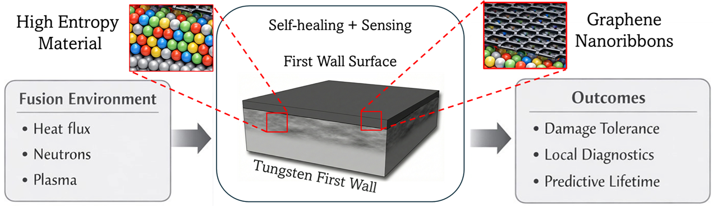

Devices that survive radiation, and report what it did to them.
I am an experimental physicist working on thin-film materials and devices for environments where ordinary electronics fail. My doctoral work built magnetic tunnel junctions with antiferromagnetic barriers. My current work combines high-entropy alloy coatings with graphene nanoribbon sensors to make a fusion reactor first wall that both resists damage and measures it while the machine is running.

About
I completed my PhD in Physics at the University of Arizona in Weigang Wang's group, with a minor in Materials Science and Engineering. My dissertation covered magnetic tunnel junctions with novel electrodes and barriers. I am now a Provost's Postdoctoral Fellow in Zafer Mutlu's group in the Department of Materials Science and Engineering.
Most of my time is spent in the cleanroom and at the probe station: thin-film deposition by sputtering and molecular beam epitaxy, photolithography and etching, and the magnetic, structural and electrical characterization that tells you whether a stack actually works. I also build and rebuild the instruments themselves, which is usually the fastest route to a measurement nobody else can make.
Over the PhD I worked on eleven projects and led six of them, funded by the Semiconductor Research Corporation, DARPA and the National Science Foundation, with collaborators at Minnesota, Stanford, Delaware, Purdue, North Carolina and NIST. The full list is on the Projects page.
My publications appear under A. Habiboglu. In Turkish my name is written Ali Taha Habiboğlu.
Research interests
- First wall and plasma-facing materials for fusion energy
- High-entropy thin films
- Graphene nanoribbons (GNRs)
- Condensed matter physics
- Metal and oxide thin-film growth and epitaxy
- Physical vapor deposition and magnetron sputtering
- Thin-film characterization under extreme environments
- Device physics
- Semiconductors
- Nanoelectronics
- Microelectronics
- 2D materials
- Quantum materials and devices
- Magnetic materials
- Memory and logic technologies
- Transistors
- Spintronics
- Quantum sensing
- Magnetic sensors
- Magnetic tunnel junctions (MTJs)
- Low-energy high-performance computing
- In-memory computing
News
- Aug 2026 Received the IEEE Neil Smith Award at TMRC 2026 for work on magnetic tunnel junctions with antiferromagnetic barriers. Department announcement.
- Aug 2026 Started as a Provost's Postdoctoral Fellow in the Mutlu group, Department of Materials Science and Engineering, University of Arizona.
- Jul 2026 The group's work on gamma response in graphene nanoribbon transistors was covered by University of Arizona News and syndicated internationally.
- 2026 Completed my PhD in Physics, University of Arizona. Thesis: Advanced Magnetic Tunnel Junctions with Novel Electrodes and Barriers.
- Jun 2026 Presented self-healing first-wall coatings with embedded nanoribbon diagnostics at the Arizona Livermore Days Workshop.
- Apr 2026 Selected for the University of Arizona Provost's Postdoctoral Fellowship. Department announcement.
Contact
Department of Materials Science and Engineering, University of Arizona, Tucson, Arizona.